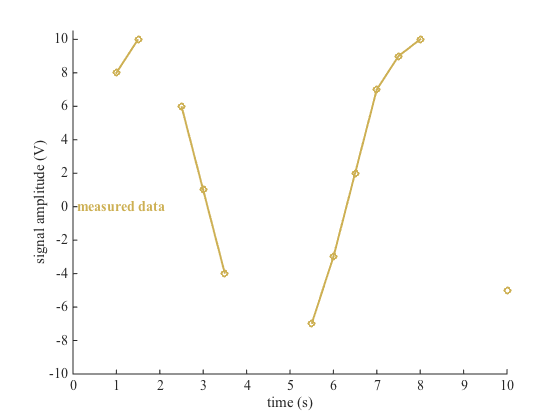
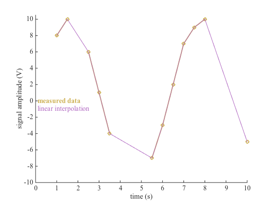
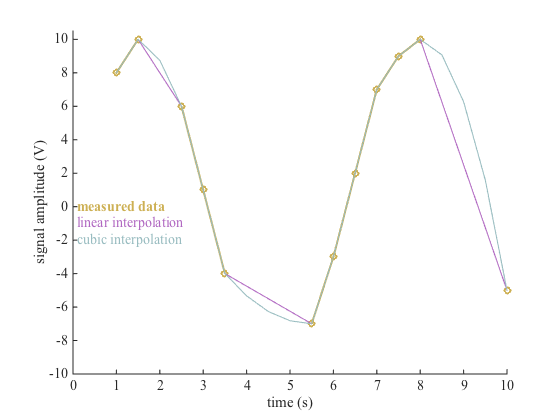
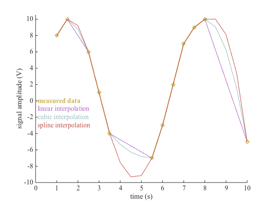
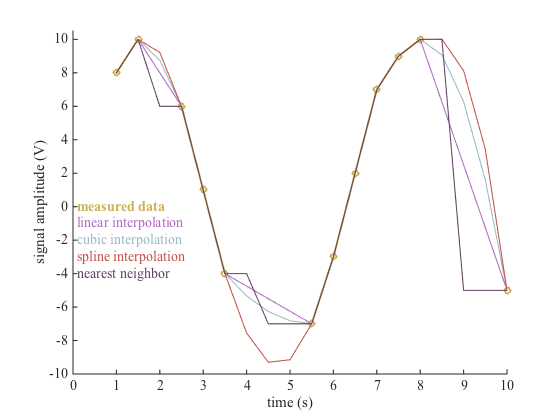
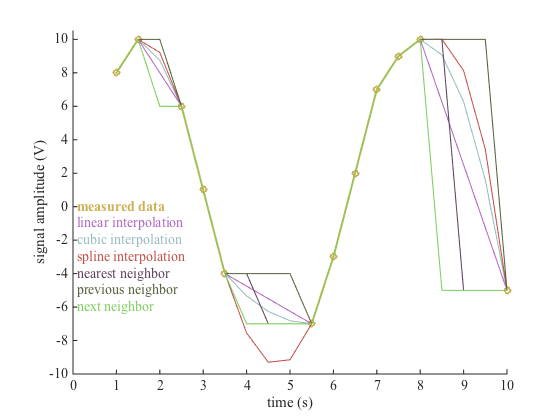

repnan documentation
This function replaces NaN values in a 1D array by replacing them with interpolated or neighboring values. Interpolation schemes assume data are evenly spaced. This function does not extrapolate.
Contents
Syntax
x = repnan(x); x = repnan(x,method);
Description
x = repnan(x) returns x sans NaNs.
x = repnan(x,method) specifies a method for replacing the original x's NaNs. Methods can be
- 'linear' (default) performs linear interpolation over missing values in x,
- 'nearest' performs nearest-neighbor interpolation,
- 'spline' performs spline interpolation using not-a-knot end conditions,
- 'pchip' is shape-preserving piecewise cubic interpolation,
- 'cubic' same as 'pchip',
- 'v5cubic' cubic convolution via Matlab v5 algorithm
- 'next' replaces NaN values in x with the next non-NaN value in x,
- 'previous' replaces NaN values in x with the previous non-NaN value in x,
Examples
You measured some data in the lab, but the ground connection on your sensor's cable was spotty, so you've got some missing data entries. Here's the data you have:
t = 1:.5:10; x = round(10*sin(t)); x([3 7 8 9 16:18]) = NaN plot(t,x,'o-','linewidth',2,'color',[0.8039 0.6902 0.3294]) box off axis([0 10 -10 10.5]) xlabel('time (s)') ylabel('signal amplitude (V)') text(0,0,' measured data','color',[0.8039 0.6902 0.3294],'fontweight','bold') hold on
x =
Columns 1 through 13
8 10 NaN 6 1 -4 NaN NaN NaN -7 -3 2 7
Columns 14 through 19
9 10 NaN NaN NaN -5
 There are a number of ways to take care of those NaN values. One of the simplest workarounds is to linearly interpolate between valid x values. If no interpolation method is specified, repnan interpolates linearly:
xlin = repnan(x); plot(t,xlin,'-','color',[0.6902 0.4039 0.7569]) text(0,-1,' linear interpolation','color',[0.6902 0.4039 0.7569])
Cubic interpolation might be a better choice for this application:
xcubic = repnan(x,'pchip'); plot(t,xcubic,'-','color',[0.5922 0.7333 0.7490]) text(0,-2,' cubic interpolation','color',[0.5922 0.7333 0.7490])
Or better yet, spline:
xspline = repnan(x,'spline'); plot(t,xspline,'color',[0.7529 0.3216 0.2863]) text(0,-3, ' spline interpolation','color',[0.7529 0.3216 0.2863])
For some applications, you might want the nearest neighbor:
xnear = repnan(x,'nearest'); plot(t,xnear,'color',[0.3765 0.2588 0.3725]) text(0,-4, ' nearest neighbor','color',[0.3765 0.2588 0.3725])
Sometimes you may want to replace missing data with the most recent or previous valid value in x:
xprev = repnan(x,'previous'); plot(t,xprev,'color',[0.3373 0.3804 0.2353]) text(0,-5,' previous neighbor','color',[0.3373 0.3804 0.2353])

And other times you may want to replace missing data with the next valid value in x:
xnext = repnan(x,'next'); plot(t,xnext,'color',[0.4941 0.8078 0.3686]) text(0,-6,' next neighbor','color',[0.4941 0.8078 0.3686])
Author Info
Written by Chad A. Greene of the University of Texas Institute for Geophysics (UTIG), October 31, 2014.